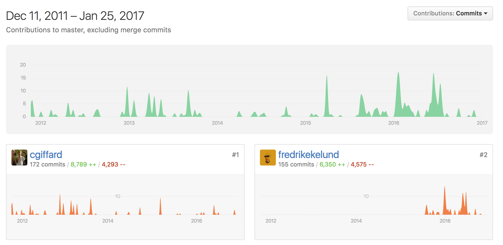

Simple Crawler
Very straightforward, event driven web crawler. Features a flexible queue interface and a basic cache mechanism with extensible backend.

特色
- 提供一個非常簡單的事件導向 API
- 以配置為基礎寫專屬於自己的爬蟲
- 自動遵守 robots.txt 訂定的規則
- 可彈性的控制 queue
- 提供最基本的網路效能統計資訊
- 抓取資料時有緩衝機制(buffers)，但不包含探索 links 的時候。
- 12,454 downloads in the last month
相依的模組
- iconv-lite：處理編碼的問題
- robots-parser：分析 robots.txt
- urijs：working with URLs